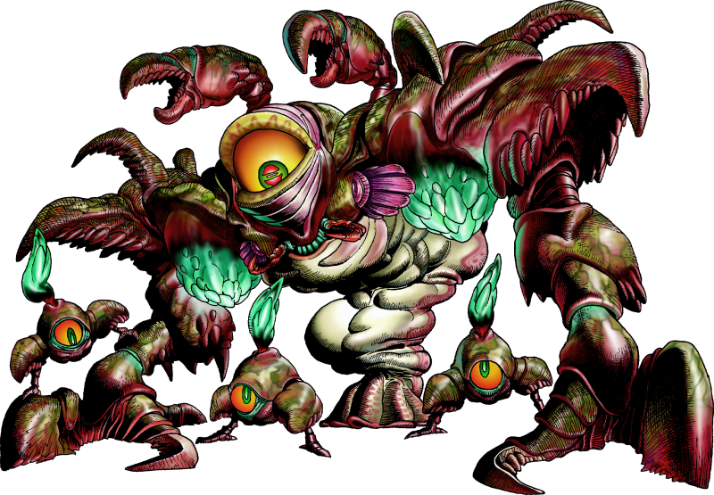
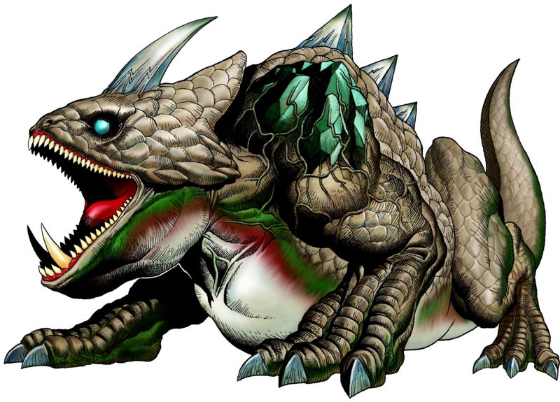
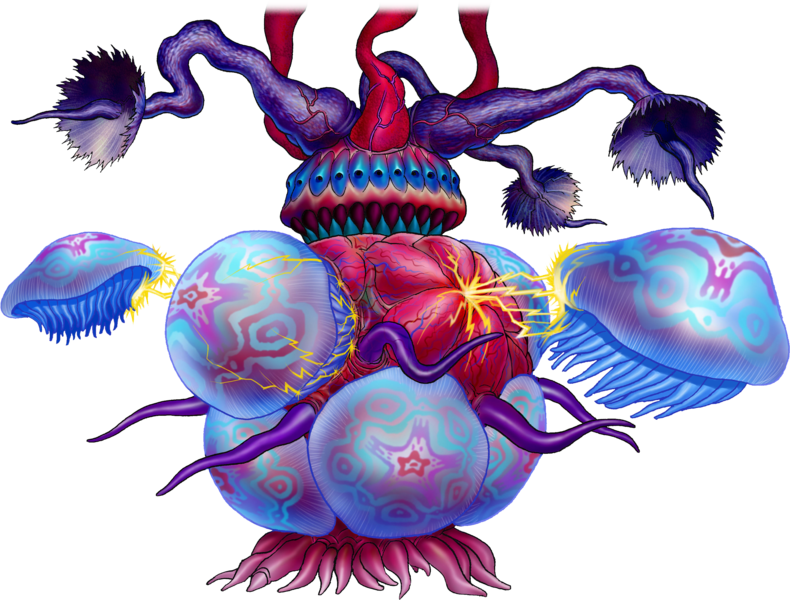
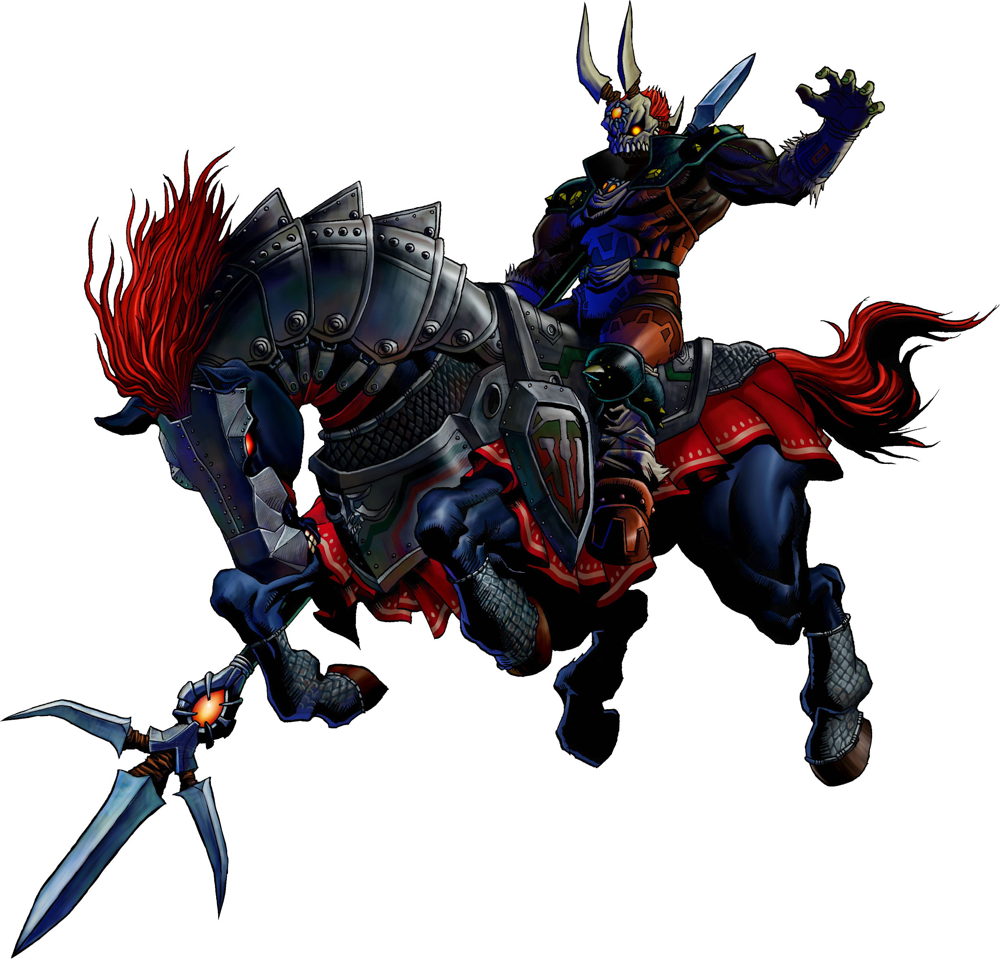
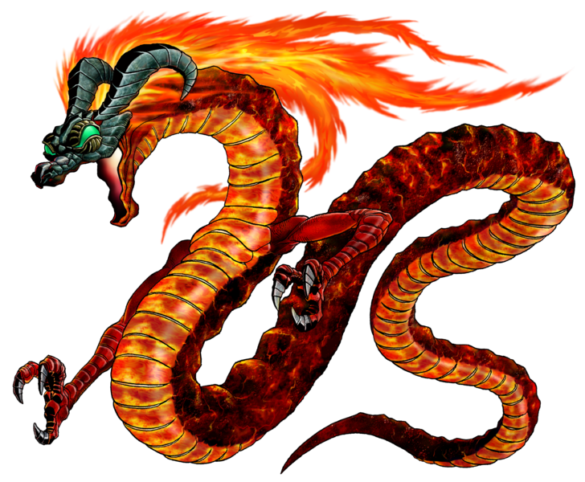
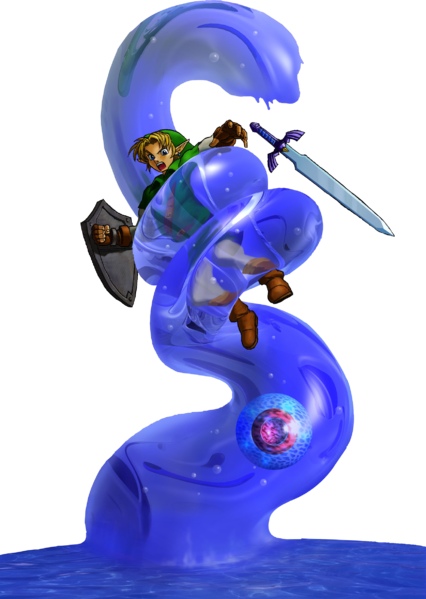
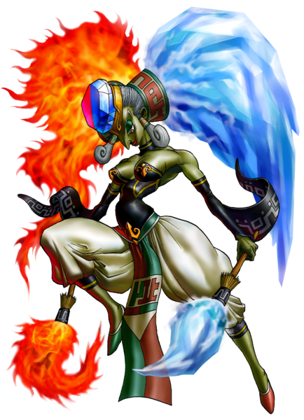
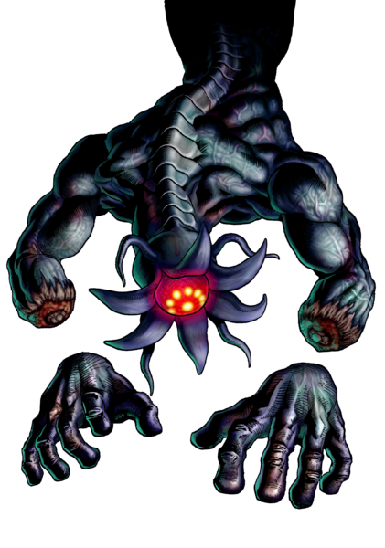
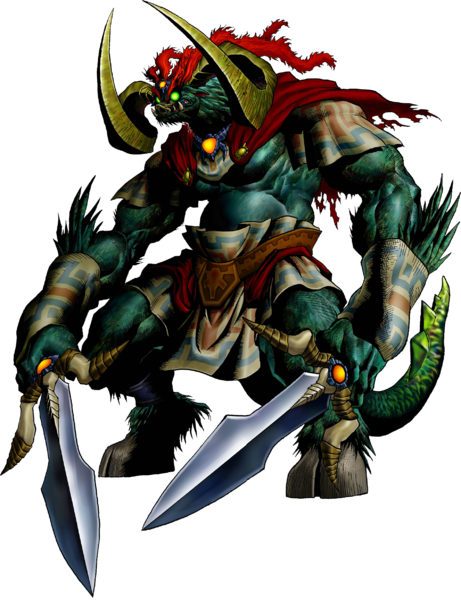

|  |
Queen GohmaL'arachnide blindé parasite Gohma, est le bosse dans Inside the Deku Tree, le premier donjon de The Legend of Zelda: Ocarina of Time. La reine Gohma est la malédiction qui a été placé sur l'Arbre Mojo par Ganondorf. Étant une créature ressemblant à une crustacé, elle peut faire éclore des larves de Gohma pour l'aider à vaincre Link. Après avoir vaincu la reine Gohma, l'Arbre Mojo offre l'Émeraude Kokiri à Link en guise de remerciement, avant de rendre son dernier souffle. |
|  |
King DodongoLe dinosaure infernal King Dodongo, est le bosse de Dodongo's Cavern, le deuxième donjon dans The Legend of Zelda: Ocarina of Time. Le roi Dodongo est le chef des Dodongo envoyé à la cavern par Ganondorf. Cela est très problématique pour les Gorons, car le roi Dodongo adore les manger. Après la défaite du roi Dodongo, Darunia présente Link avec le Rubis Goron. |
|  |
BarinadeL'anémone bio-électrique Barinade, est le bosse de Inside Jabu-Jabu's Belly, le troisième et dernier donjon de la portion enfant dans The Legend of Zelda: Ocarina of Time. Cet organisme parasite se révèle être la cause de la détresse gastro-intestinale du Seigneur Jabu-Jabu. Il semble avoir une sorte de relation symbiotique avec Bari, des ennemis récurrents dans la série The Legend of Zelda. Il ressemble également à Kalle Demos dans The Legend of Zelda: The Wind Waker. |
|  |
Phantom GanonL'esprit maléfique de l'au-delà Phantom Ganon, est le bosse du Temple de la Forêt, et le premier bosse de la portion adulte dans The Legend of Zelda: Ocarina of Time. Crée par Ganondorf pour retenir Saria en captivité, il est décrit comme étant presque identique à Ganondorf, à la seule exception de son visage en forme de crâne. |
|  |
VolvagiaLe dragon de lave souterrain Volvagia, est le bosse du Temple du Feu, le deuxième donjon de la portion adulte dans The Legend of Zelda: Ocarina of Time. Volvagia est un dragon monstreux, qui a été un fléau pour Hyrule, en particulier Death Mountain, pendant de nombreuse années bien avant les évènements du jeu. Il vole dans les airs dans un brasier de feu et plonge à travers des bassins de lave en fusion, indemne malgré leur chaleur intense. Volvagia est tristement célèbre parmi les Gorons pour avoir dévoré leur espèce vivante, mais a finalement été vaincue et tuée par le Héros des Gorons, qui brandissait le Megaton Hammer, une arme très importante dans The Legend of Zelda: Ocarina of Time. |
|  |
MorphaL'amibe aquatique géante Morpha, est le bosse du Temple de l'Eau, le troisième donjon de la portion adulte dans The Legend of Zelda: Ocarina of Time. C'est une grande créature amibienne constituée d'un noyau principal entouré de cytoplasme bleu. Le noyau est capable de manipuler l'eau d'une piscine, lui permettant de saisir, de resserrer ou de frapper Link. |
|  |
TwinrovaLes soeurs sorcières Koume et Kotake, sont les bosses du Temple des Esprits, le quatrième ou cinqième donjon de la portion adulte dans The Legend of Zelda: Ocarina of Time. Twinrova est combattu à la fois comme deux entités distinctes et comme une seule unité. Koume contrôle le feu, et Kotake contrôle la glace. Dans le remake de la Nintendo 3DS, le préfixe "Twinrova" est supprimé pour les descriptions de Koume et Kotake. Ainsi, au lieu d'être "Twinrova Koume" et "Twinrova Kotake", ils sont tout simplement connus sous le nom de "Koume et Kotake". |
|  |
Bongo BongoLa bête de l'ombre fantôme Bongo Bongo, est le bosse du Temple de l'Ombre, le quatrième ou cinquième donjon dans The Legend of Zelda: Ocarina of Time. Bongo Bongo est un esprit gargantuesque, invisible et maléfique, apparaissant comme un monstre borgne avec des mains désincarnées et une colorisation noir-violet. Avant les évènements du jeu, il a été scellé par Impa au fond du puits des trois éléments du village Kakariko. Cependant, lorsque Ganondorf prend le pouvoir, Bongo Bongo finit par briser le sceau qui y est apposé et met le feu au village Kakariko. Link arrive juste au moment où Bongo Bongo s'échappe, mais ne parvient pas à l'empêcher de se rendre au Temple de l'Ombre. |
 |
GanondorfLe grand Roi du Mal Ganondorf, est le bosse du Château de Ganon, le dernier donjon dans The Legend of Zelda: Ocarina of Time. Après avoir navigué dans le Château de Ganon, Link atteint finalement la salle du trône de Ganondorf située tout en haut de la Tour de Ganon. À l'entrée, Ganondorf joue une chanson sur un énorme orgue qui s'y trouve, avec la princesse Zelda enfermée dans un énorme cristal suspendu au-dessus de lui. Ganondorf reconnaît l'intrusion de Link et lui explique qu'il a besoin de la Triforce du Courage que Link détient pour compléter la Triforce et libérer le véritable pouvoir de l'artefact. Il essaie d'utiliser sa puissante magie pour le prendre par la force, mais Link y résiste. Cependant, le pouvoir mystique s'avère trop pour Navi, qui est par conséquent incapable d'aider Link dans la bataille qui s'ensuit. |
|  |
GanonLe dernier bosse dans The Legend of Zelda: Ocarina of Time. Après avoir vaincu Ganondorf dans son château, Link s'enfuit avec Zelda alors que Ganondorf fait s'effondrer la tour pour tenter de les écraser. Les deux parviennent à fuir la destruction en toute sécurité, et tout semble aller bien jusqu'à ce qu'ils entendent un bruit sourd provenant des ruines du château. Alors que Link s'approche des ruines pour enquêter, Ganondorf se lève de sous les décombres et active sa Triforce de pouvoir pour se transformer en Ganon, une énorme bête monstrueuse. Link s'engage dans une bataille contre Ganon et finit par le vaincre avec la Master Sword, et Zelda fait appel aux Six Sages pour le sceller dans le royaume sacré pour l'éternité. Alors qu'il est scellé, Ganon revient à sa forme originale de Gerudo et alors qu'il maudit Link, il jure qu'il reviendra pour se venger des descendants de Link et Zelda. |